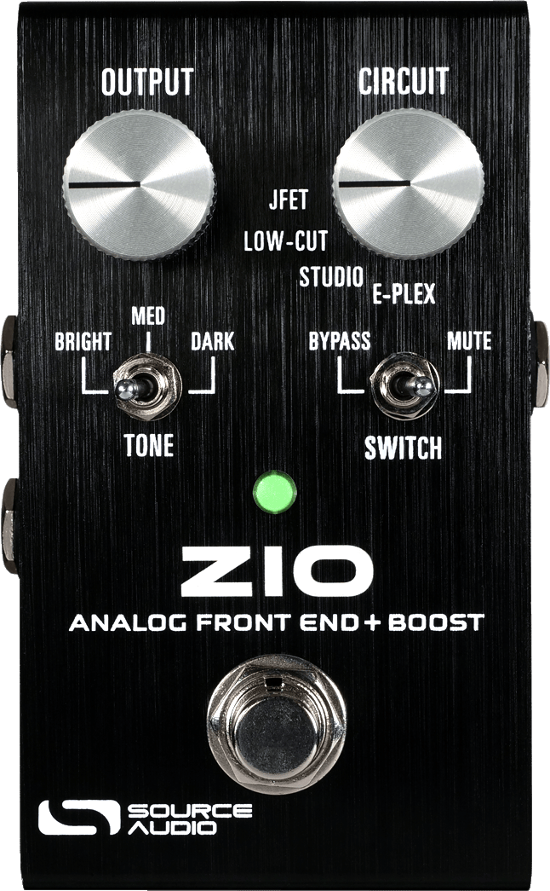
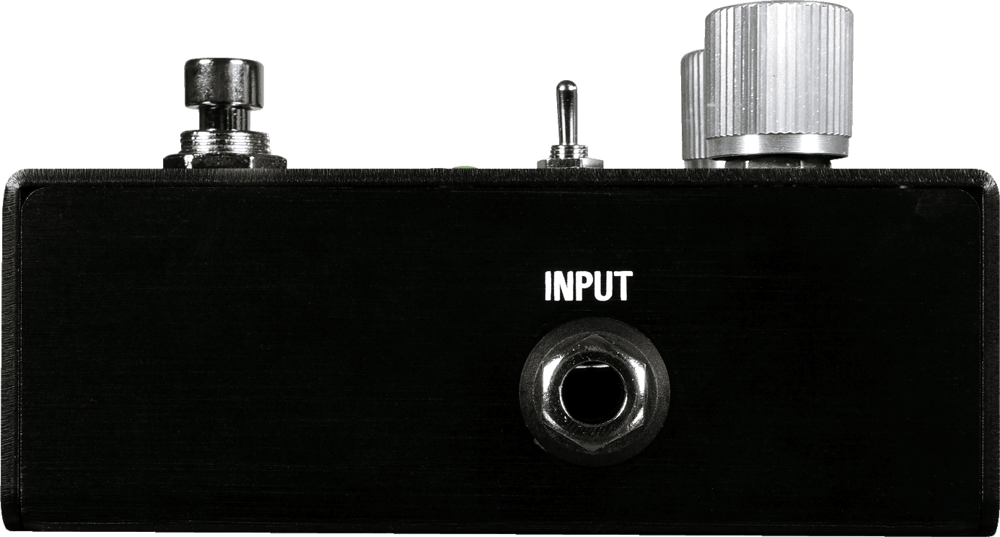
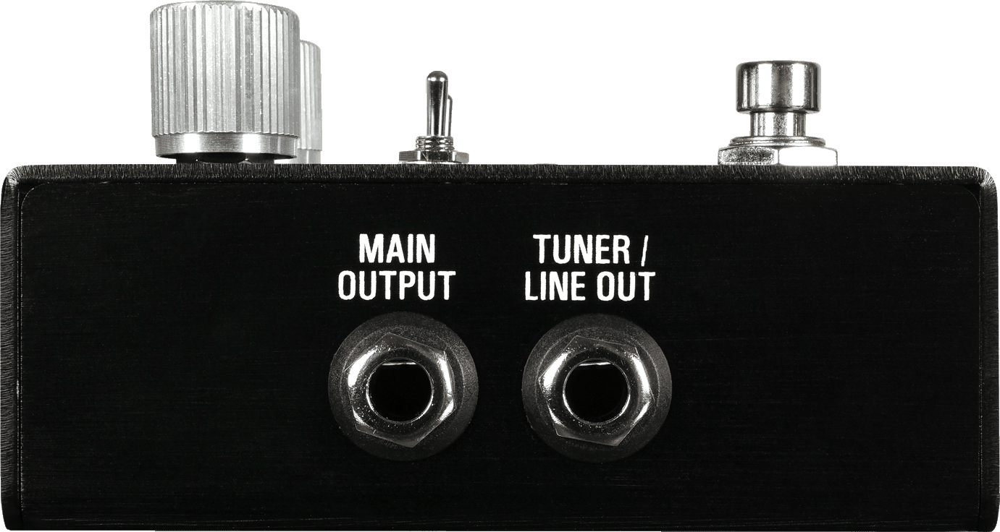
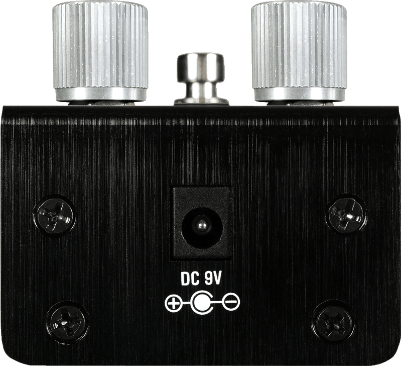
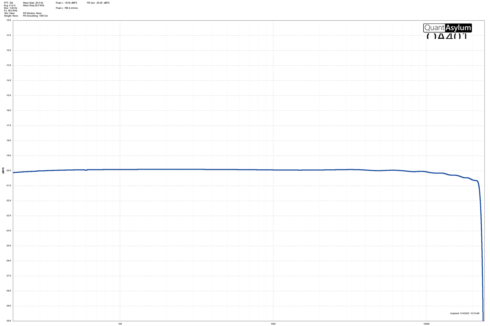
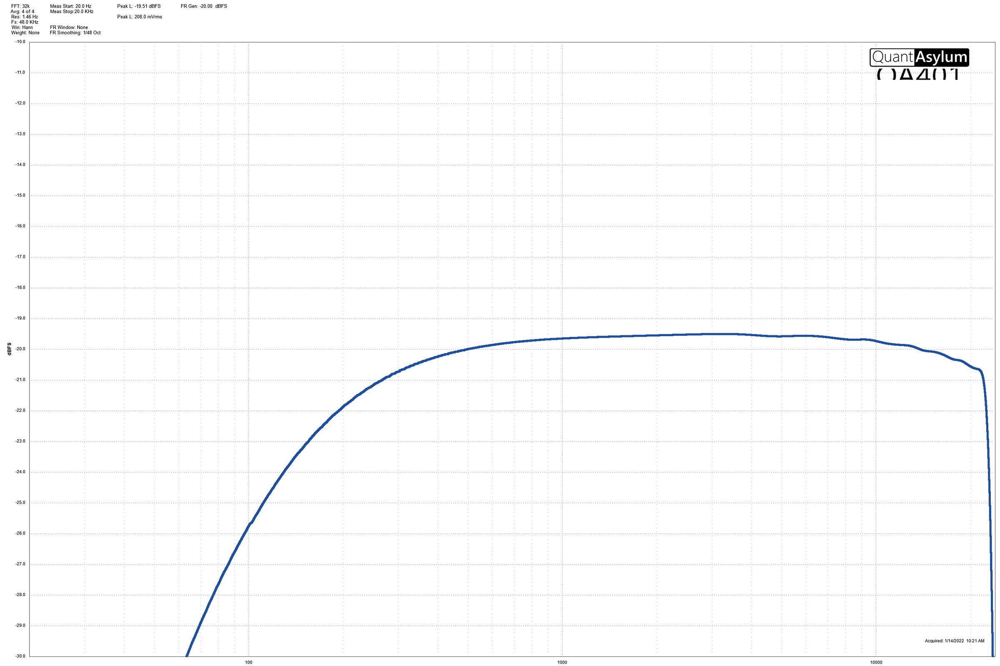
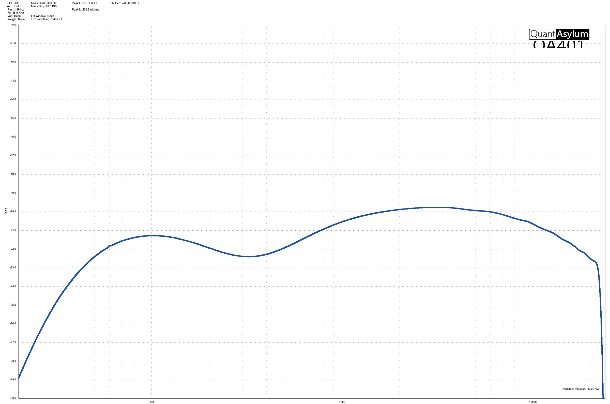
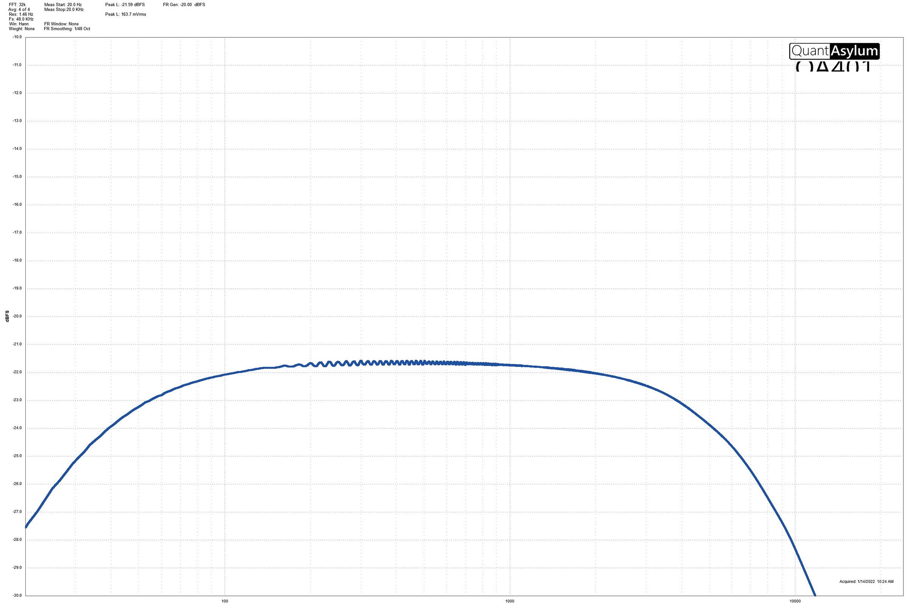
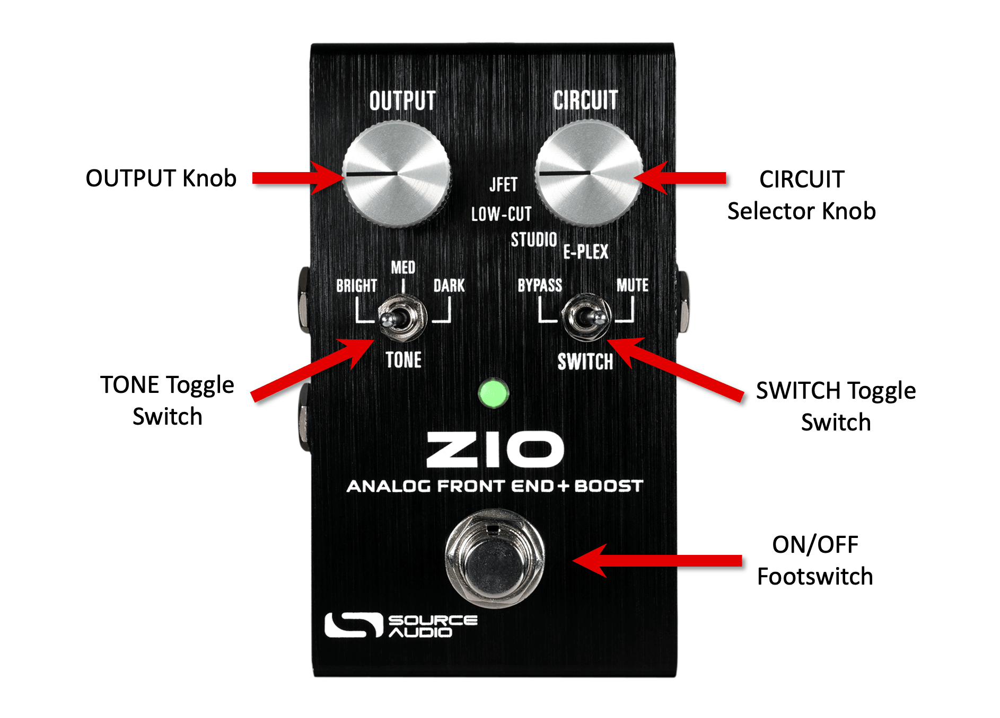
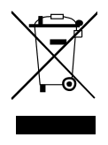

ZIO Analog Front End + Boost User Guide

Welcome
Thank you for purchasing the Source Audio ZIO! ZIO is an all-analog preamp/boost pedal that was designed for those who want to take their tone to the next level. The ZIO is our first all-analog effect pedal and was a collaboration effort with Christopher Venter of Shoe Pedals. Christopher is a longtime friend of Source Audio and a true connoisseur of sound. He has previously worked with us on other projects such as fine-tuning the True Spring Reverb and selecting its core set of sounds, as well as other successful projects such as the DOD Looking Glass Overdrive.
The word "ZIO" is an acronym for Impedance (Z), Input (I), and Output (O). The goal in creating this pedal was simple yet ambitious: we wanted to “make everything sound better.” ZIO serves two primary functions. First, it offers not one, but FOUR distinct preamp circuits that not only boost your signal level up to +20dB, but also provide four choices of preamp coloring. Second, it acts as a “buffer that doesn’t sound like a buffer,” and has the capability of restoring volume and high-end loss from long cable runs and large pedalboards. The TONE switch gives you three different levels of capacitance (or simulated cable length) to brighten or darken your tone.
The ZIO’s simple control set makes it easy to find the perfect “base tone” for any guitar and ensures that the dry signal hitting your pedals and amp remains strong and consistent. We hope that you find the ZIO to be the “better box” for your tone that you have always been searching for.
—The Source Audio Team
Feature Overview
Up to +20dB of Clean Boost – Boost your output level heading into your amplifier, interface, FOH, or other output destination.
True Bypass – The ZIO features true bypass signal path architecture, so it can be run anywhere in your chain of effects.
Compact Design – The extruded anodized aluminum housing, with its slim profile and small footprint, is built for the rigors of the road.
Four Discrete Analog Circuits – Select between four unique circuit designs, perfectly tuned for maximum performance.
Cable Capacitance Selector – Recreate three different sized loads of capacitance with the bright-to-dark TONE switch.
Flexible Bypassing – Use the ZIO as an “always on” effect in MUTE mode, or like a traditional stompbox in “BYPASS” mode.
Tuner/Line Out – ZIO features a tuner/line output that serves as an auxiliary output.
Connecting the Pedal
Power
To power the unit, connect a 9-18V DC negative-tipped power supply to the jack labeled DC 9V on the back panel.
Warning: Using an unregulated supply could damage the unit. Please be very cautious when using 3rd-party power supplies and refer to the power supply requirements in the Specifications section of this guide.
Guitar/Audio Connections
Using standard ¼” mono (TS) cables, connect your guitar, bass, or other instrument to the INPUT jack and your amp (or the next audio device in the signal chain) to the MAIN OUTPUT jack. If you have a second amp, connect it to TUNER / LINE OUT.
When the power and audio connections have been made, ZIO is ready for use.
Input Side Connections

INPUT
INPUT is the primary input for guitar, bass, or other instruments. It can also accept line-level inputs and will work in your amp’s effect loop. Connect it to your instrument or other audio source using a mono (TS) 1/4” cable.
Output Side Connections

MAIN OUTPUT
This is the primary audio output. Connect it to your amplifier, recording interface, or the next device in your effects signal chain using a mono (TS) ¼” cable.
TUNER / LINE OUT
TUNER / LINE OUT can act either as an auxiliary audio output or an output for connecting to your tuner.
- TUNER / LINE OUT Output as an Audio Output: The tip contact on TUNER / LINE OUT acts as the secondary audio output. It carries an audio signal when the ZIO is configured with a signal routing that uses stereo outputs. Connect it to your amplifier, recording interface, or the next device in your effects signal chain using a mono (TS) ¼” cable.
Power Connections

DC 9V (Power)
Connect the ZIO to a 9-18 Volt DC power supply. The power supply must be regulated at 9 to 18 Volts DC (direct current), able to source at least 20 mA (milliamps) of current, and the plug should have a tip-negative, barrel-positive polarity.
Higher Voltage
The ZIO can be powered at higher voltages up to 18V DC for extra headroom. Be sure that when using a higher voltage supply such as 12V or 18V that the power supply is still DC (direct current) and center-negative.
Preamp Modes
The ZIO features four discrete circuits to help further sculpt your overall tone. Each circuit has been meticulously crafted for the best performance, feel, and response. JFET, LOW-CUT, and STUDIO modes were all designed to have very low distortion. E-PLEX introduces a bit more grit at higher output levels. Use the CIRCUIT selector knob to audition the circuit you’d like to use.
Each preamp mode can be combined with the TONE 3-way toggle selector for more meticulous tone sculpting. Each of the modes will interact differently with the TONE switch, and you may prefer a different combination depending on the voice you select. For example, the brightest possible combination with the most treble response and clarity on the ZIO is the STUDIO preamp with the TONE switch set to “BRIGHT”. The darkest possible combination with the most top-end roll-off is the E-PLEX preamp with the TONE switch set to “DARK”.
Below is a description of each circuit along with a diagram of the circuit’s frequency response. It is important to note that while the frequency response graphs are a good gauge for the EQ voicing of each circuit, they do not tell the whole story of each preamp; they cannot capture the feel and response of each circuit, nor can they convey individual characteristics such as the slight overdrive of the E-PLEX mode.
JFET: This mode provides a very low distortion buffer or boost tone that is similar in character and behavior to a clean tube amp input. Using high quality JFET Input Burr Brown OP Amps, JFET mode is transparent, but is also designed not to add harshness and excessive brightness. JFET mode can also be very helpful in a studio or home recording environment, not only to drive long cable runs or use as a booster, but also to give a more natural sound to the DI or line inputs found on many pieces of studio equipment. It can also be used as a buffered splitter (via the second output) in order to capture a direct sound for later re-amping (for example, if you would like to record a live performance and then "clean it up" in the studio for an official release). Due to its design, JFET mode can also interface with lower impedance line inputs without excessive loss of bass content.

LOW-CUT: The LOW-CUT mode is designed to remove excessive low frequency rumble and buildup that makes it more difficult to get guitars (and sometimes basses!) to sit well in a mix. Unlike the STUDIO mode, LOW-CUT does not have an impact on the low midrange or presence frequencies, and, instead, reduces the "low lows" to improve headroom and provide a tighter sound. This is especially useful on guitar neck pickups, some basses, synths, and any other sound that may be too "boomy" and overpowering in a live or studio mix. If you also have another pedal in your signal chain that has a problematic low frequency loss when activated, LOW-CUT mode can be used as an always on buffer to reduce that bass beforehand. This way you can have a more even and predictable bass response overall and compensate accordingly using your amp's tone stack or an "always on" EQ pedal.

STUDIO: The STUDIO mode is based on a pair of popular studio mixing tricks used on guitar and bass. It combines an EQ curve based on the famous "Pultec Trick" (used on records since the 1950s and still today) in combination with other tried and true methods to improve clarity. This mode provides a low mid cut to remove "mud" frequencies, a gentle presence boost in the upper midrange, and a natural-sounding high pass filter to reduce low frequency rumble. With this mode, you can achieve a more "polished" sound that is intended to fit guitars and basses more clearly in a mix without excessive mud and bass frequency overlap. Without all that extra bass and mud, you also will gain more volume in the most useful frequencies. This mode works very well after fuzz and overdrive pedals for tone shaping as well!

E-PLEX: A recreation of the feel, character, and frequency response of a classic early 1970s tape echo unit, the E-PLEX mode offers a vintage-style FET buffer/boost tone that is warm, clear, and a little bit dirty. Many players used to turn off the echo on these old units and simply use the dry preamp for its tone and feel as an always-on effect. In the original units, the output impedance was quite high, and this led to a high frequency roll off with long cable runs. This was difficult to control, but also part of the unit's top end character.

The ZIO can internally recreate the sound of a short cable run after the echo unit (as if it were sitting near or on top of the amplifier) and a variable length of cable in front of the unit, using the TONE switch. The combined effect gives a focus in the midrange without too much brightness or boomy bass.
Where Do I Put the ZIO?
Despite being dubbed a “Front End”, the ZIO is a flexible pedal that can be strategically placed anywhere in your signal path depending on how you intend to use it. There are no hard-set “rules” for where to put your ZIO, but we’ve included a few signal path suggestions below.
Front of the Pedalboard
The ZIO is a great candidate to be the first pedal in your signal path. This is the most common place to put the ZIO in your chain. It can be used to “drive” the rest of the signal path and sculpt the tone & feel signal heading to the rest of your pedals and ultimately to the output destination (amp, simulator, interface, mixing board, etc.). Its true bypass architecture means it will not interfere with any picky fuzz pedals placed after it and can actually help to improve their performance.
After Drive/Gain Section
When used as a clean boost, ZIO can be placed after your dirt (distortion, overdrive, fuzz) section to shape the overall tone and output level of these pedals, making it an excellent final gain stage. Running overdrive pedals before the ZIO allows the ZIO to further shape the tone of these pedals. Using the CIRCUIT and OUTPUT controls, you can determine the overall shape, voice, and output level of your signal heading outbound, similar to the preamp section of an amplifier.
End of the Pedalboard
When used like a buffer or signal restorative device, the ZIO is best placed at the end of the signal path after the last pedal, right before the amplifier or final signal destination. For best results, do an A/B comparison between your tone directly into your amplifier vs. into your pedalboard with the ZIO engaged. Tweak the settings on your ZIO until the two tones match. We recommend using the JFET circuit as a starting point since this is the most uncolored circuit, but any of the four circuits will have its own unique feel and character.
Controls

OUTPUT Knob
Think of this knob as a master volume control. Rotate this knob to boost your signal +20 dB or cut your signal by about -2dB. In addition to a powerful clean boost, the OUTPUT knob can also be used to turn the ZIO into an “underdrive” when set to a gain level lower than the bypass signal. Unity gain, or +/-0dB, is set to be around the 9:00-10:00 point of the OUTPUT knob.
CIRCUIT Selector Knob
The CIRCUIT Selector Knob selects between the four discrete circuits the ZIO offers: JFET, LOW-CUT, STUDIO and E-PLEX. Each circuit has been carefully crafted to maximize performance and will react differently in your setup. You may find yourself choosing different circuits for different applications of the ZIO. For a more detailed description of each circuit, visit the Preamp Modes section of this User Guide.
TONE toggle switch
The TONE toggle switch is a 3-way toggle that mimics short, medium, or long cable runs.
- BRIGHT simulates a low-impedance short cable run, preserving (and in many cases, restoring) top end lost by long cables or large amounts of pedals.
- MED simulates a medium cable run and is the most “transparent” option, meaning it has the least overall effect on the tone of your signal.
- DARK simulates a higher-impedance, long cable run with top-end roll off from the capacitance. Use this mode to simulate a stadium-sized cable run or a coily cable. Some players would intentionally use cables like this to shave off some of the naturally harsh-sounding highs from their rigs.
Each of these toggle switch positions can be combined with the CIRCUIT Selector Knob for the utmost tonal variety.
SWITCH Toggle Switch
The SWITCH Toggle Switch is a 2-way toggle switch that sets the footswitch action. BYPASS causes the footswitch to act as a normal engage/bypass footswitch. MUTE will mute the outgoing signal from the ZIO when the ZIO is bypassed. In MUTE mode, the secondary “TUNER/LINE” output will remain unaffected so that you can use your tuner while the signal is muted.
ON/OFF Footswitch
Click the footswitch to engage or bypass the pedal. In BYPASS mode, the footswitch acts as a normal engage/bypass footswitch, and you will still hear the bypassed signal when the ZIO is off. In MUTE mode, switching the ZIO OFF will mute the MAIN OUTPUT, killing the outgoing signal entirely.
Specifications
Dimensions
- Length: 10.5 cm (4.1 inches)
- Width: 6.00 cm (2.36 inches)
- Height (not including knobs and footswitches): 4 cm (1.57 inches)
- Height (including knobs and footswitches): 5.65 cm (2.22 inches)
Weight
- 280 grams (0.625 pounds)
Power
- 20mA @ 9-18V DC
- Center negative, Barrel positive plug, 2.1 mm inner diameter, 5.5 mm outer diameter
Audio Performance
- Input Impedance: 1 Mega Ohm (1 MΩ)
- Output Impedance: 150 Ohm (150 Ω)
- True Bypass
Troubleshooting
Noise/Hum
Power source: Ensure that the proper power supply is being used.
Near noise source: Move pedal away from power supplies and other equipment.
Other equipment: Remove other effects from signal chain; see if noise persists.
Bad cables: Swap out audio cables.
Ground loop with amp: Make sure your ZIO is running on the same power mains circuit as your guitar amplifier.
Unit Appears Dead / No LEDs Lit
Wrong power supply: Use correct power supply. See the DC 9V (Power) section for more details.
No Sound
Ensure that the SWITCH toggle switch is not set to “MUTE”.
Frequently Asked Questions
What kind of instruments can I connect to the ZIO’s inputs?
The ZIO’s audio inputs are high impedance (~ 1 MΩ) and they can accept high impedance signal sources like guitars/basses with passive pickups, as well as low impedance sources like line-level audio circuits, guitars/basses with active pickups, electronic keyboards, or mixer outputs. The input circuit can handle signals ranging up to 6.0 Volts, peak-to-peak.
When connecting the ZIO to a recording interface or mixer, should I use a Lo-Z (microphone) or Hi-Z (line / instrument) input?
The ZIO’s output will be low impedance when the effect is active or in buffered bypass mode, but it will be high impedance when using true bypass mode and a guitar with passive pickups. Therefore, it is recommended that you use a high impedance (Hi-Z) input on your recording interface or mixer to avoid signal loss.
Can I use the ZIO in my amp’s effects loop?
The ZIO audio inputs can handle up to 8.76 dBu or 6.0 Volts peak-to-peak, which allows it to work in most amp effects loops. Be sure to check your amp’s documentation to verify that the maximum send level is less than the ZIO’s maximum input level.
Rubber Feet
The ZIO comes standard with a flat aluminum bottom, making it easy to apply Velcro and mount to a pedalboard. Additionally, adhesive rubber feet are included in the ZIO box. Applying the rubber feet to the ZIO can help prevent it from sliding on flat surfaces such as a hardwood floor.
Waste Disposal Notes

If possible, dispose of the device at an electronics recycling center. Do not dispose of the device with the household waste.
For full compliance with EN 61000-4-6 standard, input cable must be less than 3 meters in length.
Warranty
Limited Transferrable Warranty
Source Audio, LLC (hereinafter “Source Audio”) warrants that your new Source Audio ZIO Analog Front End + Boost, when purchased at an authorized Source Audio dealer in the United States of America (“USA”), shall be free from defects in materials and workmanship under normal use for a period of two (2) years from the date of purchase by the original purchaser. Please contact your dealer for information on warranty and service outside of the USA.
Under this Limited Warranty, Source Audio’s sole obligation and the purchaser’s sole remedy shall be repair, replacement, or upgrade, at Source Audio’s sole discretion, of any product that, if properly used and maintained, proves to be defective upon inspection by Source Audio. Source Audio reserves the right to update any unit returned for repair and to change or improve the design of the product at any time without notice. Source Audio reserves the right to use reconditioned parts and assemblies as warranty replacements for authorized repairs. Any product repaired, replaced, or upgraded pursuant to this Limited Warranty will be warranted for the remainder of the original warranty period.
This Limited Warranty is extended to the original retail purchaser. This Limited Warranty can be transferred to anyone who may subsequently purchase this product provided that such transfer is made within the applicable warranty period and Source Audio is provided with all of the following information: (i) all warranty registration information (as set forth on the registration card) for the new owner, (ii) proof of the transfer, within thirty (30) days of the transfer, and (iii) a photocopy of the original sales receipt. Warranty coverage shall be determined by Source Audio in its sole discretion. This is your sole warranty. Source Audio does not authorize any third party, including any dealer or sales representatives, to assume any liability on behalf of Source Audio or to make any warranty on behalf of Source Audio.
Warranty Information
Source Audio may, at its option, require proof of the original purchase date in the form of a dated copy of the original authorized dealer’s invoice or sales receipt. Service and repairs of Source Audio products are to be performed only at the Source Audio factory or a Source Audio authorized service center. Prior to service or repair under this Limited Warranty, the purchaser must request from Source Audio a return authorization, which is available at:
Source Audio LLC
120 Cummings Park, Woburn, MA 01801
(781) 932-8080 or at www.sourceaudio.net
Unauthorized service, repair, or modification will void this Limited Warranty.
Disclaimer and Limitation of Warranty
Do not open the effects pedal under any circumstance. This will void the warranty.
The foregoing limited warranty is the only warranty given by Source Audio and is in lieu of all other warranties. All implied warranties, including warranties of merchantability and fitness for any particular purpose, exceeding the specific provisions of this limited warranty, are hereby disclaimed and excluded from this limited warranty. Upon expiration of the applicable express warranty period, Source Audio shall have no further warranty obligation of any kind, express or implied. Source Audio shall in no event be liable for any special, incidental, or consequential damages suffered by the purchaser or any third party, including without limitation, damages for loss of profits or business or damages resulting from use or performance of the product, whether in contract or in tort. Source Audio shall not be liable for any expenses, claims, or suits arising out of or relating to any of the foregoing. Some states do not allow the exclusion or limitation of implied warranties so some of the above limitations and exclusions may not apply to you. This Limited Warranty gives you specific legal rights, and you may also have other rights, which vary from state to state. This Limited Warranty only applies to products sold and used in the USA. Source Audio shall not be liable for damages or loss resulting from the negligent or intentional acts of the shipper or its contracted affiliates. You should contact the shipper for proper claims procedures in the event of damage or loss resulting from shipment.
Version History
January 13, 2022: Initial release
Insert Card
ANALOG FRONT END + BOOST
The ZIO is an all analog front-end buffer and preamp with +20dB of clean boost. The ZIO features four selectable distinct preamp circuits to pair perfectly with your guitar pickups and optimize your tone.
POWER – Power your ZIO using a 9V DC supply. Positive barrel and negative tip. 18V supplies can be used to increase headroom. Please make sure the following pedals can handle higher signal levels.
CIRCUIT – selects a preamp circuit.
JFET – Clean and transparent. Ultra-low distortion and noise. Recaptures lost high frequencies from your guitar without adding excessive brightness.
LOW-CUT – Removes excessive low frequency rumble to clean up bassy pickup tone to sit well in a mix. Creates a tighter sound without affecting mids and presence.
STUDIO – Based on a pair of popular studio mixing methods. It applies an EQ curve based on the classic “Pultec Trick” to improve clarity by adding gentle presence to the upper mids.
E-PLEX – Our own recreation of the feel, character, and frequency response of a classic early 1970s tape echo unit. A vintage-style FET buffer. Warm, clear, and a little dirty.
OUTPUT – Very low distortion clean boost for all modes from slightly below unity gain to +20dB.
TONE – A simple tone control that simulates the effect of short, medium, and long cable runs by adding capacitance to reduce high frequencies on very bright guitars.
| SWITCH (BYPASS) | SWITCH (MUTE) | |||
|---|---|---|---|---|
| LED | MAIN OUT | TUNER/LINE | MAIN OUT | TUNER/LINE |
| ON | Active | Active | Active | Active |
| OFF | True Bypass | No Connection | Muted | Active |